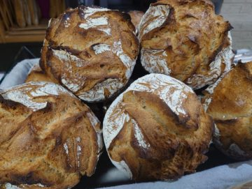
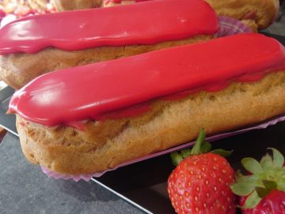

Pain
Pains au levain
Une mie genereuse, une croute bien marquee et du gout pour accompagner les repas.
Boulangerie - Patisserie - Snacking
Pains au levain, viennoiseries maison, patisseries et douceurs traiteur prepares chaque jour au coeur d'Yssingeaux.
Coeur d'artisans
Au Fournil Yssingelais accueille les habitants d'Yssingeaux avec une offre artisanale pensee pour tous les moments de la journee : pain du quotidien, viennoiseries du matin, pause dejeuner et patisseries a partager.
La maison met en avant des produits frais, des recettes traditionnelles et une fabrication maison, portees par Richard et Angelique Montchalin et leur equipe.

La selection
Une mie genereuse, une croute bien marquee et du gout pour accompagner les repas.

Entremets, eclairs, tartes et creations de saison pour les envies sucrees.
Croissants, pains au chocolat et douceurs a emporter des l'ouverture.
Wraps, formules rapides et recettes salees pour une pause pratique et fraiche.
Petites attentions colorees pour offrir, recevoir ou simplement se faire plaisir.
Avis clients
"Le pain au levain tient vraiment bien et les patisseries sont toujours soignees."
"Pratique pour le midi : accueil rapide, choix sale et viennoiseries encore tiedes."
"Une adresse de quartier fiable, avec de beaux produits maison pour le week-end."
Contact
Appelez la boulangerie ou passez directement au 16 avenue du 8 Mai 1945 a Yssingeaux. Le formulaire ci-dessous sert de maquette et n'envoie pas encore de message.